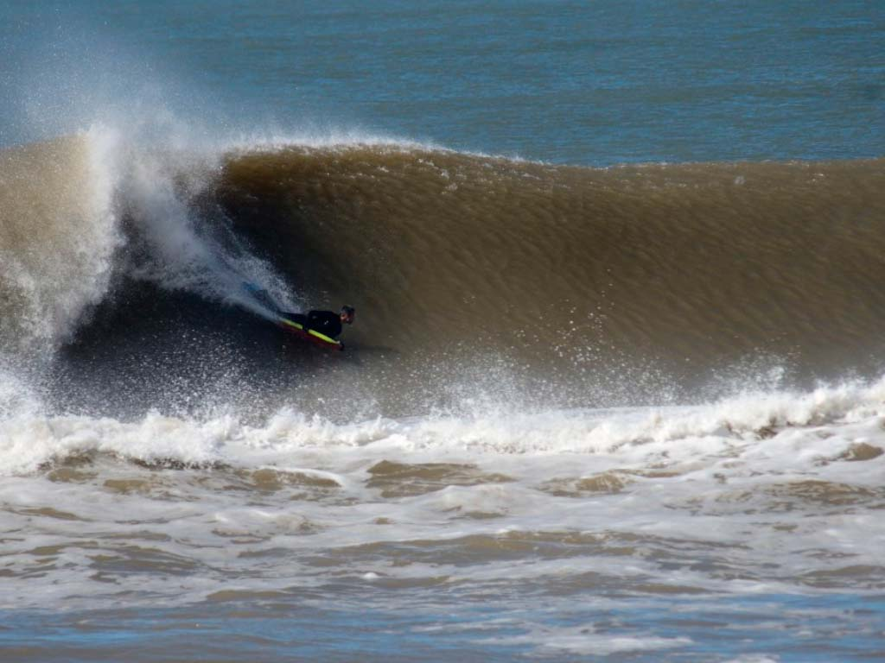
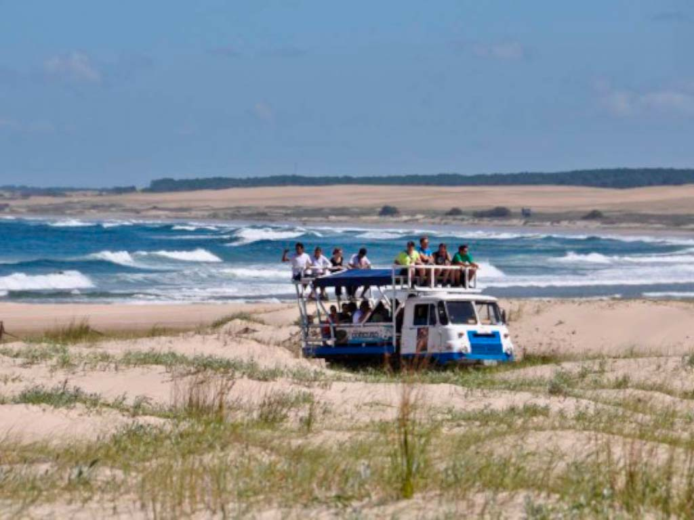

¡Un monton para hacer!
Surf en la Paloma
La Paloma se destaca como una de las principales para practicar surf. El balneario tiene un cabo que se adentra en el Océano Atlántico, lo que hace, que su ubicación geográfica sea la más favorable para los diferentes vientos y oleajes que llegan a sus picos, La ola esta en una u otra playa a una distancia relativamente corta Casi 10 kilómetros de playas surfistas, olas para todos los gustos, derechas e izquierdas; desde El Gavilán, Corumbá, Los Botes, Zanja Honda, Balconada, hasta La Aguada con La Farola, El Murito y El Mirador.
Caminata Valizas-Cabo
Uno de los paseos más representativos, tanto al visitar Barra de Valizas como Cabo Polonio, es la caminata entre los balnearios. Desde veranos ya lejanos, la travesía es un clásico para toda aquella persona que visite una de estas dos localidades, y es una oportunidad única para presenciar la riqueza natural de la fauna marina y el paisaje semidesértico que domina en las dunas móviles que separan (o unen) ambos destinos.

¡En Camion al Cabo!
Las antiguas rutas por las que circulaban los colosos fueron delimitadas nuevamente cuando el Gobierno nacional declaró las dunas de Cabo Polonio Monumento Natural. A fin de cuidarlas, se estableció una ruta que va rodeando los médanos hasta el cabo. El camión es escalonado y los jóvenes, parados en la parte superior, ríen y disfrutan de la emoción que da la velocidad del camión y la perspectiva de estarse introduciendo en tierra salvaje, el sabor de la aventura.
